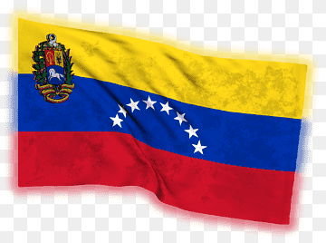

My name is Fátima. I am a wife and mother of four children. Our family is centered on faith, love. Right now, our hearts are full as our oldest daughter serves a full-time mission in the Maracaibo Mission, sharing the gospel with courage and joy. As I pursue my studies in web development, I carry with me the lessons of patience, resilience, and hope that come from raising a family and trusting in the Lord.
Guárico, Venezuela
I was born and raised in Calabozo, a sun-drenched town in the heart of Guárico State, Venezuela, land of the vast llanos. Despite years of national challenges, the Venezuelan people remain deeply resilient, holding on to joy, faith, and community. Our cuisine reflects centuries of heritage, blending Indigenous corn traditions with Spanish colonial influences, think warm Arepas, Cachapas, hearty Sancocho, and the beloved Pabellón Criollo. These flavors, stories, and values shaped my childhood and continue to inspire me today.
Official Flag of Venezuela